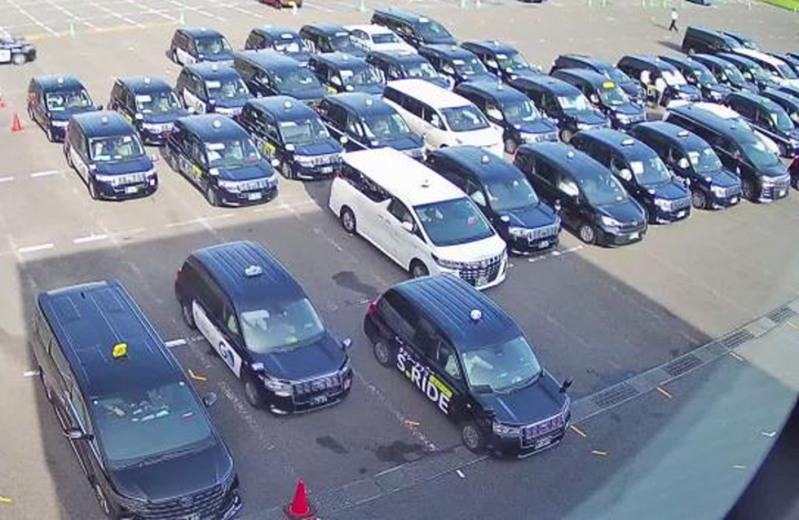

4号の列移動 — 私の認識（2026-09-18・描き直し版）
あなたが決めた定義と、Mac mini の画像で私が追った結果。合っていない所を指摘してください。
① 定義（記録から。ここは変えない）
- 列移動＝横スライド。列1・2が空いたら残りの塊が横に2列（1列のことも）スライド。前進ではない。
- 1回の数え方＝「前方列が出る(fall) → 6分以内に埋まる(rise)」の対。入庫だけの rise は数えない。
- 4号は奥カメラ(real002)の後列で測る（6/05 あなたの指示）。後列＝起点コーンから右へ8レーン幅。計測箱＝起点コーンのレーン、奥行き t370-450（8/21 確定）。
② 車の向きと列（描き直し）
最初に出した青い縦線は間違いでした（設定ファイルの消失点をそのまま描いた。車の向きと合っていない）。車を見て引き直したのが下です。

9/13 15:00 拡大。車はカメラ側（画面の下・やや右）を向いて止まっている（前のグリルが見える）。同じ列の後ろの車は左上にいる＝列は左上へ遠ざかる。横に並ぶ車が「行」。

緑＝車の前後軸を3台で実測（●が前）。その向きで列線を引き直した。赤＝コーンの列（列1）。白＝その右の列2〜。赤枠＝計測箱（列1の、コーン手前線の位置）。
見えること：
- 9/13 は塊がコーンの手前線まで来ていて、列1の先頭（箱）に車がいる。
- 9/17 14:04 は塊の前縁がコーンの手前線よりずっと奥で止まっている。列1の先頭は箱より奥にある＝箱は空。
- だから箱では「出る→埋まる」の対がほとんど起きない。
- 設定の列線（消失点）が車の向きと合っていないので、「コーンから右へ8レーン」の範囲も画像上でずれている可能性が高い（要測り直し）。
③ 20分の流れ（14:00→14:20、4分おき）

塊の前縁（カメラに近い側）は t150〜200 あたりで、箱（t370-450）には届かない。
④ 1分おきで追う（14:16→14:25）

私に見えたこと：
- 14:19:44 に 1台が塊の前縁・左寄りから出て、左下（出口側）へ走っていく。
- 出た後、前縁の並びはほぼそのまま（4台）。塊全体が横に動いた（横スライド）とは、この10分では見分けられなかった。
- 塊の形が変わるのは主に 奥（右上）からの入庫。
未解決点：塊の前縁が日によって（時間によって）どこで止まるかが変わるので、固定の小さな箱1つでは列1の先頭を追えない。「出る→埋まる」を列1の全奥行きで見る作りにする必要がある（設計変更＝あなたの承認が要る）。
⑤ 日ごとの箱の状態

| 日 | 3号 列移動(記録) | 4号 列移動(記録) |
|---|---|---|
| 9/9〜9/16 | 24〜40 /日 | 6〜23 /日 |
| 9/17 | 18 | 3 |
4号は本来いちばん動きが多い乗り場（8/27監査：旧カメラ期 63回/日）。
⑥ 次に私がやること（あなたの承認なしで動かさない）
- 列の向きを車の前後軸から測り直して設定に入れる（今回は3台で仮測定。複数フレーム・多数台で確定する）。
- そのうえで 1日分の画像を通しで追い、「列1が空く→塊が横にずれる」が実際にどこで起きているかを画像で示す。
- それが分かってから、箱の置き場所を提案する（数を増やす目的では動かさない）。